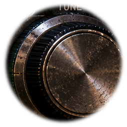
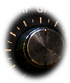
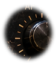
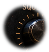

RX OFF7.120.000 MHzLSB100 HzBW 2.4 kHz
NRMS · SITE 04
SHIFT MONITOR
Receiver offline
Log: 0 observations
NR-041 · pending
Archive integrity active7.120.000
SIG --
SNR --
ΔF --
SNR --
ΔF --




V2 WORKING PROTOTYPE · SIMULATED RF, NOT LIVE RADIO